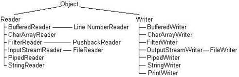
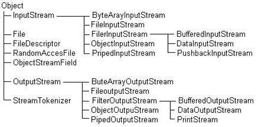

электронный
ресурс по учебной дисциплине 1-58 01 01 - "ИНЖЕНЕРНО-ПСИХОЛОГИЧЕСКОЕ ОБЕСПЕЧЕНИЕ ИНФОРМАЦИОННЫХ ТЕХНОЛОГИЙ".
|
||
| Оглавление | Программа | Теория | Практика| Контроль знаний | Об авторах | ||
|
Оглавление
Практическая работа №2 Использование системных функций для работы с файловой системой. 1. Цель работы Изучение системы ввода/вывода платформы Java и средств для работы с потоками данных. 2. Учебный материал по практической Для того чтобы отвлечься от особенностей конкретных устройств ввода/вывода, в Java употребляется понятие потока (stream). Считается, что в программу идет входной поток (input stream) символов Unicode или просто байтов, воспринимаемый в программе методами read(). Из программы методами write о или print (), println() выводится выходной поток (output stream) символов или байтов. При этом неважно, куда направлен поток: на консоль, на принтер, в файл или в сеть, методы write () и print () ничего об этом не знают. Можно представить себе поток как трубу, по которой в одном направлении последовательно "текут" символы или байты, один за другим. Методы read () , write () , print (), println () взаимодействуют с одним концом трубы, другой конец соединяется с источником или приемником данных конструкторами классов, в которых реализованы эти методы. Конечно, полное игнорирование особенностей устройств ввода/вывода сильно замедляет передачу информации. Поэтому в Java все-таки выделяется файловый ввод/вывод, вывод на печать, сетевой поток. Три потока определены в классе system статическими полями in, out и err. Их можно использовать без всяких дополнительных определений. Они называются соответственно стандартным вводом (stdin), стандартным выводом (stdout) и стандартным выводом сообщений (stderr). Эти стандартные потоки могут быть соединены с разными конкретными устройствами ввода и вывода. Потоки out и err — это экземпляры класса PrintStream, организующего выходной поток байтов. Эти экземпляры выводят информацию на консоль методами print (), println () и write (), которых в классе Printstream имеется около двадцати для разных типов аргументов. Поток err предназначен для вывода системных сообщений программы: трассировки, сообщений об ошибках или, просто, о выполнении каких-то этапов программы. Такие сведения обычно заносятся в специальные журналы, log-файлы, а не выводятся на консоль. В Java есть средства переназначения потока, например, с консоли в файл. Поток in — это экземпляр класса InputStream. Он назначен на клавиатурный ввод с консоли методами read(). Класс InputStream абстрактный, поэтому реально используется какой-то из его подклассов. Понятие потока оказалось настолько удобным и облегчающим программирование ввода/вывода, что в Java предусмотрена возможность создания потоков, направляющих символы или байты не на внешнее устройство, а в массив или из массива, т. е. связывающих программу с областью оперативной памяти. Более того, можно создать поток, связанный со строкой типа string, находящейся, опять-таки, в оперативной памяти. Кроме того, можно создать канал (pipe) обмена информацией между подпроцессами. Еще один вид потока — поток байтов, составляющих объект Java. Его можно направить в файл или передать по сети,'а потом восстановить в оперативной памяти. Эта операция называется сериализацией (serialization) объектов. Методы организации потоков собраны в классы пакета java.io. Кроме классов, организующих поток, в пакет java.io входят классы с методами преобразования потока, например, можно преобразовать поток байтов, образующих целые числа, в поток этих чисел. В Java есть целых четыре иерархии классов для создания, преобразования и слияния потоков: Reader — абстрактный класс, в котором собраны самые общие методы символьного ввода; Writer — абстрактный класс, в котором собраны самые общие методы символьного вывода; InputStream — абстрактный класс с общими методами байтового ввода; OutputStream — абстрактный класс с общими методами байтового вывода. Классы входных потоков Reader и inputstream определяют по три метода ввода: – read () — возвращает один символ или байт, взятый из входного потока, в виде целого значения типа int; если поток уже закончился, возвращает -1; – read (chart] buf) — заполняет заранее определенный массив buf символами из входного потока; в классе inputstream массив типа bytet] и заполняется он байтами; метод возвращает фактическое число взятых из потока элементов или -1, если поток уже закончился; – read (char[] buf, int offset, int len) — заполняет часть символьного или байтового массива buf, начиная с индекса offset, число взятых из потока элементов равно len; метод возвращает фактическое число взятых из потока элементов или -1. Эти методы выбрасывают IOException, если произошла ошибка ввода/вывода. Четвертый метод skip (long n) "проматывает" поток с текущей позиции на п символов или байтов вперед. Эти элементы потока не вводятся методами read(). Метод возвращает реальное число пропущенных элементов, которое может отличаться от п, например поток может закончиться. Текущий элемент потока можно пометить методом mark (int n), а затем вернуться к помеченному элементу методом reset о, но не более чем через п элементов. Не все подклассы реализуют эти методы, поэтому перед расстановкой пометок следует обратиться к логическому методу marksupported (), который возвращает true, если реализованы методы расстановки и возврата к пометкам. Классы выходных потоков Writer и OutputStream определяют по три почти одинаковых метода вывода: – write (char[] buf) — выводит массив в выходной поток, в классе Outputstream массив имеет тип byte[]; – write (char[] buf, int offset, int len) — выводит len элементов массива buf, начиная с элемента с индексом offset; – write (int elem) в классе Writer - выводит 16, а в классе Outputstream 8 младших битов аргумента elem в выходной поток; – write (string s) — выводит строку s в выходной поток; – write (String s, int offset, int len) — выводит len символов строки s, начиная с символа с номером offset. Многие подклассы классов Writer и OutputStream осуществляют буферизованный вывод. При этом элементы сначала накапливаются в буфере, в оперативной памяти, и выводятся в выходной поток только после того, как буфер заполнится. Это удобно для выравнивания скоростей вывода из программы и вывода потока, но часто надо вывести информацию в поток еще до заполнения буфера. Для этого предусмотрен метод flush(). Данный метод сразу же выводит все содержимое буфера в поток. Наконец, по окончании работы с потоком его необходимо закрыть методом closed. Классы, входящие в иерархии потоков ввода/вывода, показаны на рисунок 1 и 2.  Рисунок 1. Иерархия символьных потоков  Рисунок 2. Классы байтовых потоков Все классы пакета java.io можно разделить на две группы: классы, создающие поток (data sink), и классы, управляющие потоком (data processing). Классы, создающие потоки, в свою очередь, можно разделить на пять групп: 1) классы, создающие потоки, связанные с файлами: – FileReader; – FilelnputStream; – FileWriter; – FileOutputstream; – RandomAccessFile. 2) Классы, создающие потоки, связанные с массивами: – CharArrayReader; – ByteArraylnputStream; – CharArrayWriter; – ByteArrayOutputStream. 3) Классы, создающие каналы обмена информацией между подпроцессами: – PipedReader; – PipedlnputStream; – PipedWriter; – PipedOutputStream. 4) Классы, создающие символьные потоки, связанные со строкой: – StringReader; – StringWriter. 5) Классы, создающие байтовые потоки из объектов Java: – ObjectlnputStream; – ObjectOutputStream. Классы, управляющие потоком, получают в своих конструкторах уже имеющийся поток и создают новый, преобразованный поток. Можно представлять их себе как "переходное кольцо", после которого идет труба другого диаметра. Четыре класса созданы специально для преобразования потоков: – FilterReader; – FilterlnputStream; – FilterWriter; – FilterOutputStream. Сами по себе эти классы бесполезны — они выполняют тождественное преобразование. Их следует расширять, переопределяя методы ввода/вывода. Но для байтовых фильтров есть полезные расширения, которым соответствуют некоторые символьные классы. Четыре класса выполняют буферизованный ввод/вывод: – BufferedReader – BufferedlnputStream – BufferedWriter – BufferedOutputStream Два класса преобразуют поток байтов, образующих восемь простых типов Java, в эти самые типы: – DatalnputStream; – DataOutputStream. Два класса содержат методы, позволяющие вернуть несколько символов или байтов во входной поток: – PushbackReader; – PushbacklnputStream. Два класса связаны с выводом на строчные устройства — экран дисплея, принтер: – PrintWriter – PrintStream Два класса связывают байтовый и символьный потоки: – InputStreamReader — преобразует входной байтовый поток в символьный поток; – OutputStreamWriter — преобразует выходной символьный поток в байтовый поток. Класс StreamTokenizer позволяет разобрать входной символьный поток на отдельные элементы (tokens) подобно тому, как класс stringTokenizer, рассмотренный нами в главе 5, разбирал строку. Из управляющих классов выделяется класс sequenceinputstream, сливающий несколько потоков, заданных в конструкторе, в один поток, и класс LineNumberReader, "умеющий" читать выходной символьный поток построчно. Строки в потоке разделяются символами '\n' и/или '\г'. Для вывода на консоль мы всегда использовали метод println() класса InputStream, никогда не определяя экземпляры этого класса. Мы просто использовали статическое поле out класса System, которое является объектом класса PrintStream. Исполняющая система Java связывает это поле с консолью. Консоль является байтовым устройством, и символы Unicode перед выводом на консоль должны быть преобразованы в байты. Для символов Latin 1 с кодами '\u0000' — '\u00FF' при этом просто откидывается нулевой старший байт и выводятся байты '0х00' —'0xFF'. Для кодов кириллицы, которые лежат в диапазоне '\u0400 1 —'\u04FF 1 кодировки Unicode, и других национальных алфавитов производится преобразование по кодовой таблице, соответствующей установленной на компьютере лакали. Трудности с отображением кириллицы возникают, если вывод на консоль производится в кодировке, отличной от локали. Именно так происходит в русифицированных версиях MS Windows NT/2000. Обычно в них устанавливается локаль с кодовой страницей СР1251, а вывод на консоль происходит в кодировке СР866. В этом случае надо заменить PrintStream, который не может работать с символьным потоком, на PrintWriter и "вставить переходное кольцо" между потоком символов Unicode и потоком байтов system, out, выводимых на консоль, в виде объекта класса OutputStreamWriter. В конструкторе этого объекта следует указать нужную кодировку. Класс PrintStream буферизует выходной поток. Второй аргумент true его конструктора вызывает принудительный сброс содержимого буфера в выходной поток после каждого выполнения метода println(). Но после print() буфер не сбрасывается! Для сброса буфера после каждого print() надо писать flush(). Поскольку файлы в большинстве современных операционных систем понимаются как последовательность байтов, для файлового ввода/вывода создаются байтовые потоки с помощью классов Fileinputstream и FiieOutputstream. Это особенно удобно для бинарных файлов, хранящих байт-коды, архивы, изображения, звук. Но очень много файлов содержат тексты, составленные из символов. Несмотря на то, что символы могут храниться в кодировке Unicode, эти тексты чаще всего записаны в байтовых кодировках. Поэтому и для текстовых файлов можно использовать байтовые потоки. В таком случае со стороны программы придется организовать преобразование байтов в символы и обратно. Чтобы облегчить это преобразование, в пакет java.io введены классы FineReader и FileWriter. Они организуют преобразование потока: со стороны программы потоки символьные, со стороны файла — байтовые. Это происходит потому, что данные классы расширяют классы InputStreamReader и OutputstreamWriter, соответственно, значит, содержат "переходное кольцо" внутри себя. Несмотря на различие потоков, использование классов файлового ввода/вывода очень похоже. В конструкторах всех четырех файловых потоков задается имя файла в виде строки типа string или ссылка на объект класса File. Конструкторы не только создают объект, но и отыскивают файл и открывают его. При неудаче выбрасывается исключение класса FileNotFoundException, но конструктор класса FileWriter выбрасывает более общее исключение IOException. После открытия выходного потока типа FileWriter или FileQutputStEeam содержимое файла, если он был не пуст, стирается. Для того чтобы можно было делать запись в конец файла, и в том и в другом классе предусмотрен конструктор с двумя аргументами. Если второй аргумент равен true, то происходит дозапись в конец файла, если false, то файл заполняется новой информацией. По окончании работы с файлом поток следует закрыть методом close (). Преобразование потоков в классах FileReader и FileWriter выполняется по кодовым таблицам установленной на компьютере локали. Для правильного ввода кирилицы надо применять FileReader, a нe FileInputStream. Если файл содержит текст в кодировке, отличной от локальной кодировки, то придется вставлять "переходное кольцо" вручную. Операции ввода/вывода по сравнению с операциями в оперативной памяти выполняются очень медленно. Для компенсации в оперативной памяти выделяется некоторая промежуточная область — буфер, в которой постепенно накапливается информация. Когда буфер заполнен, его содержимое быстро переносится процессором, буфер очищается и снова заполняется информацией. Житейский пример буфера — почтовый ящик, в котором накапливаются письма. Мы бросаем в него письмо и уходим по своим делам, не дожидаясь приезда почтовой машины. Почтовая машина периодически очищает почтовый ящик, перенося сразу большое число писем. Представьте себе город, в котором нет почтовых ящиков, и толпа людей с письмами в руках дожидается приезда почтовой машины. Классы файлового ввода/вывода не занимаются буферизацией. Для этой цели есть четыре специальных класса BufferedXxx, перечисленных выше. 3. Порядок выполнения работы 1. Ознакомиться с учебным материалом 2. В ide Eclipse создать проект. 3. Реализовать в проекте: создание файлов, чтение данных из файла и запись данных в файл. 4. Продемонстрировать результат работы преподавателю. 5. Согласовать с преподавателем содержание отчёта и подготовить его. 4. Контрольные вопросы 1. Как организованна работа с файлами в языке java? 2. Расскажи алгоритм чтения данных из файла. 3. Какие классы для буферизованный ввода/выводы данных вы знаете? 4. Опишите как проходит декодирование файла из битового в символьный потоки.
|
| (С) БГУИР |